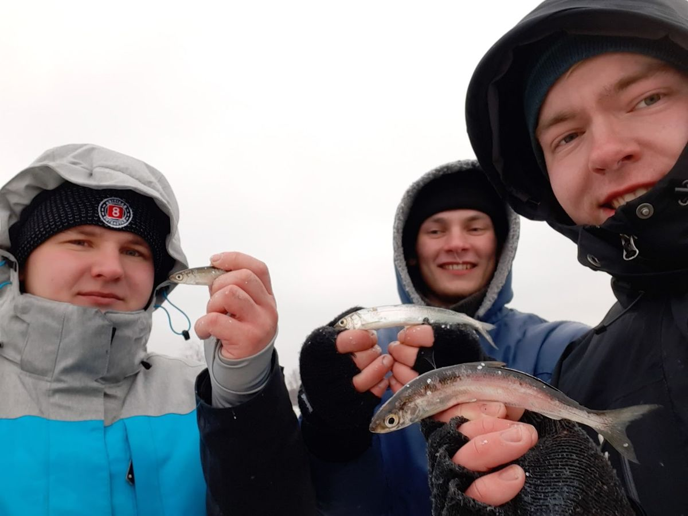
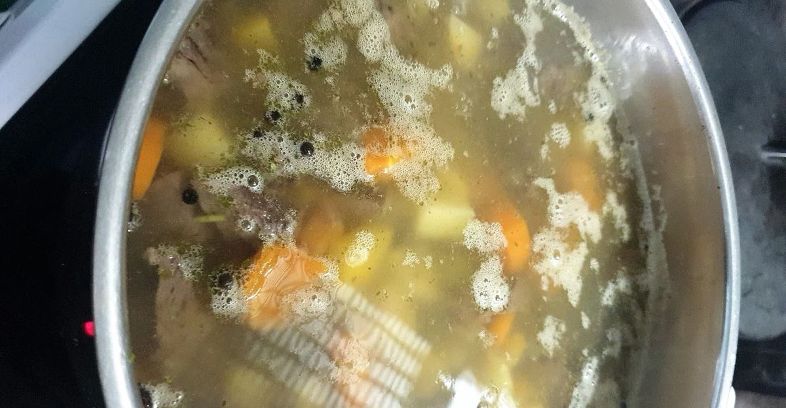
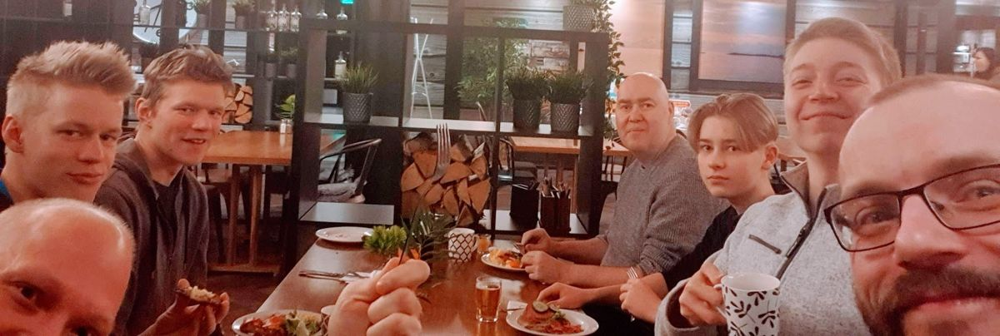

Blogitekstit · Helmikuu 2020
Helmikuu - kauas on pitkä matka
Kaupallinen yhteistyö Paitakulman kanssa.

Kalastustunteja kertyi 56 tuntia ja sillä saatiin lajeja nousemaan 3 kuha, muikku ja siika pääsivät helmikuun lajilistalleni.
Lajia Per Reissu (LPR) lukema tasan 1,29, tehokkuus 92,86ja Suomen ennätyksestä saavutettu 17%.
Tähän kerrottakoot, että lasken kalastustunnit kodista lähtemisen ja kotiin paluun välisen ajan. Todellisuudessa varsinaisia kalanpyyntitunteja on huomattavasti vähemmän kuin mitä edellä mainittu.
Kahden reissun kuukausi


Juuso teki kavereidensa kanssa täsmäiskun Kokkolaan Ykspihlajan Potin uimarannan edustalle saaden lajeiksi listalleen tavoitellut muikun ja siian. Myös Joonas Pysäys kävi muikkupilkillä ja laittoikin tilannetietoa jää ja kalatilanteesta.
"Kokkolan muikut ja siiat on vielä samoilla paikoilla. Jäätä oli tosi hyvin tänään." -Joonas
Meidän retkitiimi odotti jo innolla kuukauden loppupuolella tehtävää Kokkola-Lapinlahti reissua. Yli 1200 km, kolme päivää, kaksi yötä. Helsingistä kaksi autokuntaa, Turusta yksi, Kuopiosta kaksi ja paikallisoppaana Lapinlahden ankeriaskuningas Miikka Nyman.
Retkivalmisteluihin kuului nurkkiin jääneiden kalastusvälineiden myyminen Facebookin kalastuskirppiksillä. Yksi myyntikohde oli perhovapa, jonka osti Juha Orava. Juhaan tutustuin Riihimäen Erämessuilla vuonna 2018.
Ensimmäisen kerran kävimme kalareissulla kahvilla hänen luona Timin kanssa kun olimme menossa onkimaan sulkavaa Saarijärvelle Harri Pylväläisen kanssa. Lue tuo tarina tästä.
"Isäntä Juha on legendaarisen Kojamo Äijän tekijä, jonka kanssa juttelin Erämessuilla. Matka sujui leppoisasti ja Heinolan kohdalla laitoin viestiä, että olemme noin klo 9.30 Vaajakoskella."
Lupasin toimittaa vavan henkilökohtaisesti perille Kokkolaan mennessämme, ajaisimmehan Heinolan ja Jyväskylä kautta ottaen Miikan ja Petrin kyytiin. Juha lupasi keittää kahvit ja kysyi myös maistuisiko matkalaisille hirvi-peurakeitto?
Astetta pidempi pysähdys ei todellakaan haittaisi, jos voisimme tankata keitolla mahat täyteen ennen loppumatkan alkamista.


Helmikuun alkupuolella myös Miikka Pulliainen laittoi viestiä, kysyen miten aion taimenen tai lohen pyydystää. Kerroin, että taimenelle en ole Läsäkoskea enenempää mitään suunnitellut ja lohi odottaisi vuoden loppua ja retkeä Kymijoelle Ari Laineen kanssa. Niinhän siinä kävi, retki maaliskuun lopulle tuli sovittua Miikan kanssa.
Helmikuun alkuun kuului myös Venemessuilla käynti. Messuilla tapasin vloggari Defen eli Jesse Haaraojan, hänen kanssa olin jo aikaisemmin puhunut Kymijoelta toutaimen kalastamisesta. Sovimme, että hän on yhteydessä kun toutaimen kalastusaika alkaa hänen "takapihallaan".
Messuilla esitettin myös Pike Mastersin finaalijakso jonka upeasti yksin kalastaen, lainavehkeillä vei Garmin tiimi Jani Karosen johdolla.
Helmi-maaliskuun vaihteessa alkanut muikku-ankeriasretki kruunasi kahden kalareissun kuukauden. Muikku-ankerias retkestä voit lukea tästä. (tulossa)


Helmikuun retkistatistiikka
- lajeja kasassa 9 | reissuja 2 | tunteja 56 | kilometrejä 814
Facebookin Lajikalastus 2020 listaus
18 lajia, Miika Kovanen, 16 lajia, Juuso Triipponen, 12 lajia, Justus Kamppinen, 12 lajia, Juha Salonen, 10 lajia, Olli Salonen, 9 lajia, Petri Ristola, 8 lajia, Henri Lillman, 8 lajia, Joonas Orupold,
6 lajia, Ari Meskanen, 6 lajia, Vili Lillman, 5 lajia, Wesa Karsikas, 4 lajia, Matti Kimonen, 4 lajia, Niko Huovila, 4 lajia, Aleksi Aaltonen, 3 lajia, Harri Pylväläinen, 2 lajia, Venla Lillman, 2 lajia, Vesa Sivonen, 1 lajia, Olli Varhimo, 1 lajia, Patrik Lauha
Maaliskuu edessä. Retkiä suunniteltu jo Kymijoelle, ehkä innostuu tekemään kampela tai härkäsimppureissun jos kelit sen sallii.
Seuraa ennätyksen etenemistä
Pidän kirjaa lajilistasta ja tarkemmasta retkidatasta Google -taulukossa, joka löytyy jokaisesta ennätysyrityksen postauksesta. Tästä linkistä taulukko avautuu uuteen ikkunaan.
Seurantatilanne löytyy myös blogini oikeasta yläreunasta.
Vuoden aikana ennätysyrityksessä kulkee mukaan myös tämä kalataitelija-graaffikko Sakke Yrjölän suunnittelema SPECIES FIN 53 -merkki.
Paitakulmassa painatin pipoon ja lippikseen saman merkin. Tavoitteeni on saada aikaiseksi 53 saaliskuvaa tekstin alussa tekemääni taulukkoon joissa kaikissa kuvissa näkyisi tuo kyseinen tunnus.
Paitakulma on Suomalainen perheyritys, joka haluaa panostaa laatuun ja asiakastyytyväisyyteen. Tutustu yrityksen palveluihin tästä.
2020 ankerias Juuso Triipponen Kokkola lapinlahti Miika Kovanen Miika Nyman muikku Petri Ristola siika SpeciesFIN53 Timi Laitinen yhteenveto 2020